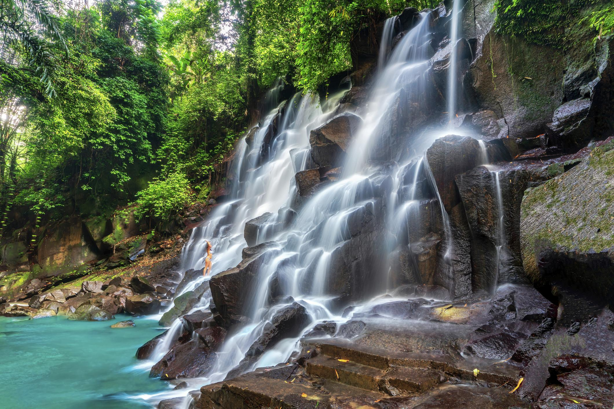

Tour Highlights
Places You Will Visit
Experience the perfect combination of culture, nature, spirituality, and local flavors in the heart of Bali.

Monkey Forest
A sacred forest sanctuary in the heart of Ubud.

Tegallalang Rice Terrace
Iconic rice terraces with beautiful tropical views.

Tirta Empul Temple
A holy water temple known for Balinese purification rituals.

Kanto Lampo Waterfall
One of Bali's most photogenic waterfalls, surrounded by tropical jungle and natural rock formations.

Bali Coffee Plantation
Discover traditional Balinese coffee-making and enjoy a tasting experience with scenic jungle views.